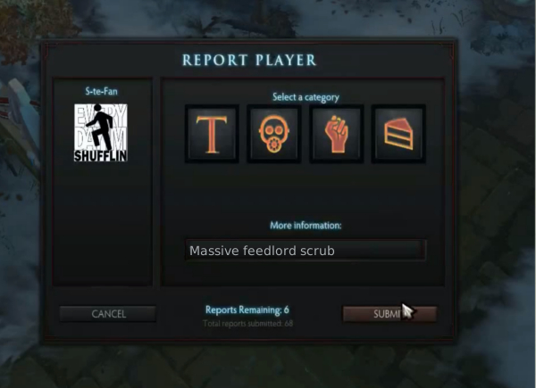

Best practice to stop feeding in DOTA2
If someone is feeding right now follow this steps:
- Tell the person feeding to stop it in a friendly way (eg. "Feeder: please stop with this, I don't want this") - Also see Anti-Feeder-Script for half-automating this
- If the feeder is not respecting this and continues, afk in fountain (the area in the upper right for dire or lower left for radiant) and flame the offending feeder
- If the feeder continues then ask all other players in all chat to report the offending feeder
- If the feeder continues to be a detriment to the team then use the mute button next to the bully's name in the game scoreboard
- As a last measure, if none of the previous steps have helped, eg. the feeder is feeding in multiple games at once or similar, join the DOTA2 dev forum and blogpost for the feeder being removed from the DOTA2 network (technical terms for this are: VAC ban) — Really only do this if the previous steps have failed multiple times!
It is important to try steps 1, 2 and 3 first before using mute! If you just mute the feeder he will most likely continue to feed in other games. Think about the other games too!
Remember that Disconnect is not an option to stop feeding!
